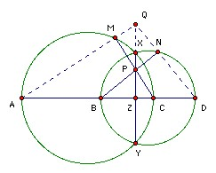

Let A, B, C, D be four distinct points on a line, in that order. The circles with diameter AC and BD intersect at X and Y. The line XY meets BC at Z. Let P be a point on the line XY other than Z. The line CP intersects the circle with diameter AC at C and M, and the line BP intersects the circle with diameter BD at B and N. Prove that the lines AM, DN, XY are concurrent.
Solution

Let DN meet XY at Q. Angle QDZ = 90o - angle NBD = angle BPZ. So triangles QDZ and BPZ are similar. Hence QZ/DZ = BZ/PZ, or QZ = BZ·DZ/PZ. Let AM meet XY at Q'. Then the same argument shows that Q'Z = AZ·CZ/PZ. But BZ·DZ = XZ·YZ = AZ·CZ, so QZ = Q'Z. Hence Q and Q' coincide.

© John Scholes
jscholes@kalva.demon.co.uk
24 Oct 1998
Last corrected/updated 23 Aug 03